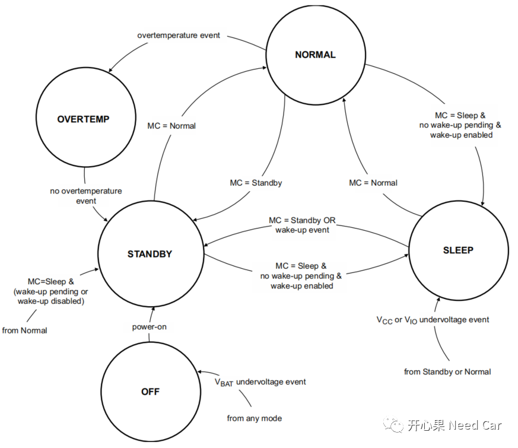
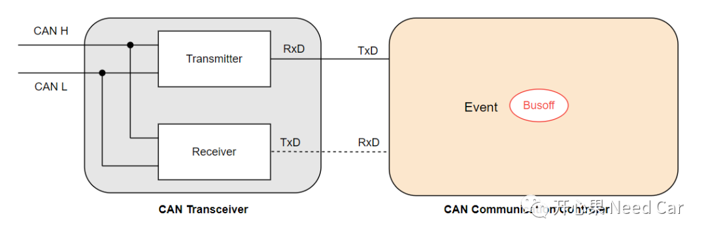
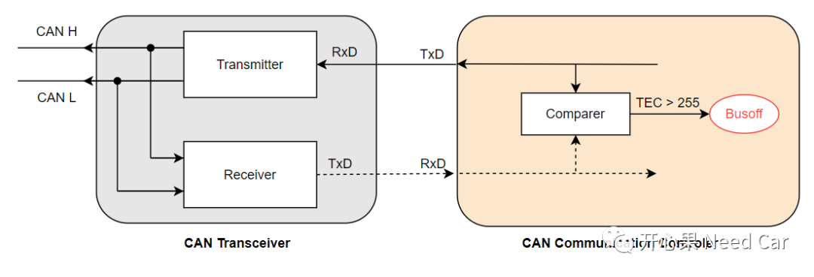
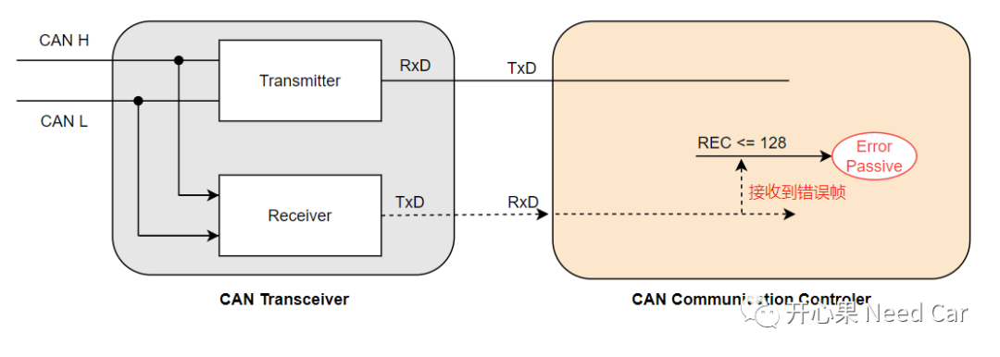
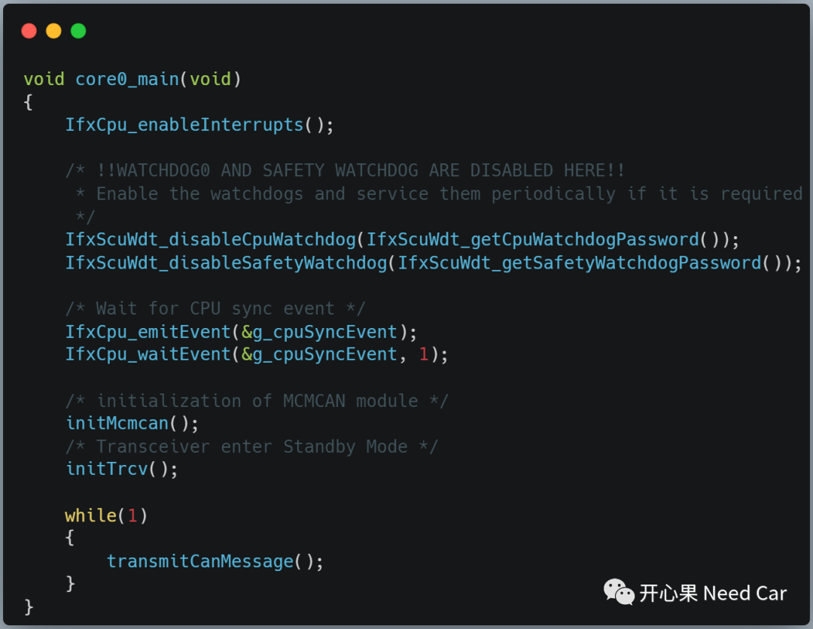
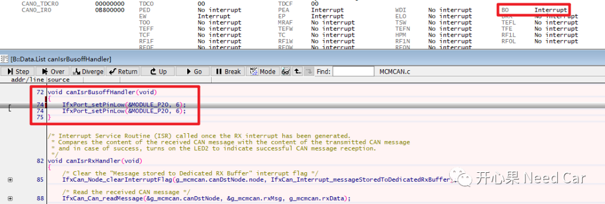

开心果 Need Car · 2023-10-30T08:11:00+08:00 · 微信原文
搞汽车电子开发的小伙伴，对于CAN总线应该再熟悉不过了。可以说，掌握CAN总线及对应的协议栈是基础级入门。虽然CAN总线用了多年，有经验的工程师甚至觉得：CAN的知识已经烂熟于胸。然而，有些细碎的知识依然卡在盲区里，等待补齐。如标题，如果CAN Transceiver不工作，或者说，进入了Standby Mode，对应的节点是否会Busoff呢？
1、CAN Busoff与Transceiver、Controller模式
弄清楚这个问题，需要先理解几个概念：CAN Busoff、CAN Transceiver（Trcv）模式以及CAN Communication Controller（简称CC）。
（一）CAN Busoff
关于CAN Busoff问题，可以参考前文《CAN通信：Busoff问题知多少》，节点发生Busoff的条件：节点CAN Controller的TEC（Transmit Error Counter）＞255。
（二）Tansceiver模式
以常用的NXP TJA1145为例，其包含5种模式：Normal、Standby、Sleep、Overtemp、Off，模式之间的状态切换如下所示：

（三）CAN Communication Controller
对于CC的状态机，不同的芯片，设计的状态机有所不同，甚至只有Start/Stop。而在Autosar CAN Driver规范中，定义了CC的状态机：CAN_CS_UNINIT、CAN_CS_STARTED、CAN_CS_STOPPED、CAN_CS_SLEEP。对于一些CC，可能没有Sleep模式，且Start模式只能由Stop模式进入，不考虑软件层面的Uninit状态，CC实际只有Start、Stop模式。
CAN Busoff、CAN Transceiver、CAN Communication Controller三者关系如下所示：

当CC发送报文时，发送的数据与收到的数据不一致时（边发送边接收），发送错误计数器TEC就会按照规则累加，当TEC > 255时，就会产生Busoff，如下所示：

当CC接收其它节点报文时，接收节点检测到错误，接收节点CC的REC（Receive Error Counter）会累加，不会超过128，最多进入被动错误状态（Error Passive），但是，不会因为接收到错误帧导致Busoff，如下所示：

2、Transceiver不工作，能否busoff?
（一）理论验证
验证程序如下所示：


往期精彩回顾
MCMCAN：CAN hardware object配置规则
如何基于HighTec，在链接文件（*.lsl）中设置自定义段